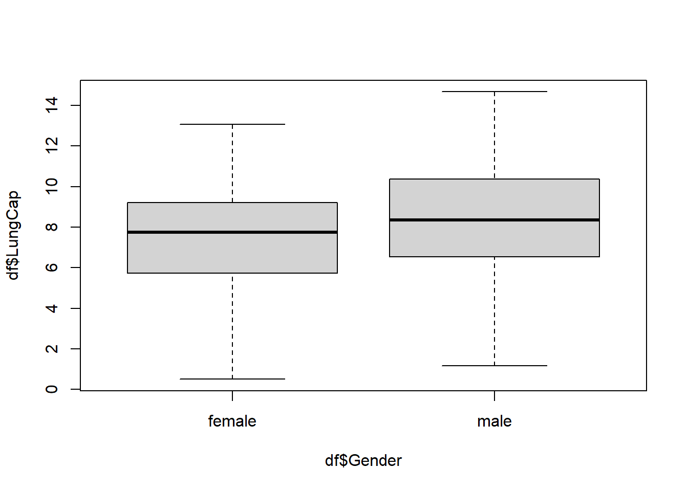

The histogram suggests that the distribution is close to a normal distribution. Most of the observations are close to the mean. Very few observations are close to the margins (0 and 15).
Code
head(df)
# A tibble: 6 × 6
LungCap Age Height Smoke Gender Caesarean
<dbl> <dbl> <dbl> <chr> <chr> <chr>
1 6.48 6 62.1 no male no
2 10.1 18 74.7 yes female no
3 9.55 16 69.7 no female yes
4 11.1 14 71 no male no
5 4.8 5 56.9 no male no
6 6.22 11 58.7 no female no
Code
hist(df$LungCap)
1.b
(Comparing lung cap by gender)
Here we notice that males tend to have a higher lung cap compared to females. Females average tends to sit around 8 while males seems to sit closer to 9
Code
boxplot(df$LungCap~df$Gender)

1.c
(smoker vs non-smoker lung cap)
Interestingly, none smokers tend to have a lower lung capacity however, I believe this might be due to age. No this does not make sense at first glance and does betray my expectation.
# A tibble: 2 × 2
Smoke mean
<chr> <dbl>
1 no 7.77
2 yes 8.65
1.d
(relation between smoking and lung cap at different age groups)
The lung cap starts off higher but takes and dip then rises as the age continues to grow. I believe the trend is the higher age grows the higher the lung cap until it reaches a certain point.
Code
# lung cap is 9.62df %>%select(Age, LungCap) %>%filter(Age >=13) %>%colMeans()
Age LungCap
15.609290 9.628757
Code
# lung cap is 9.04df %>%select(Age, LungCap) %>%filter(Age >=14& Age <=15) %>%colMeans()
Age LungCap
14.533333 9.045417
Code
# lung cap is 10.24df %>%select(Age, LungCap) %>%filter(Age >=16& Age <=17) %>%colMeans()
Age LungCap
16.44330 10.24588
Code
# lung cap is 11.26df %>%select(Age, LungCap) %>%filter(Age >18) %>%colMeans()
Age LungCap
19.00000 11.26149
1.e
(lung cap for smokers and non smokers broken into age groups)
We notice a clear trend that smokers have a lower lung capacity compared to non-smokers
# A tibble: 2 × 2
Smoke mean
<chr> <dbl>
1 no 11.3
2 yes 11.3
1.f
(correlation and covariance between lung capacity and age)
correlation is at .819 meaning they have a positive correlation of about 82%. This means that there is a connection between the two and when one goes up so does the other.
Code
cov(df$LungCap, df$Age)
[1] 8.738289
Code
cor(df$LungCap, df$Age)
[1] 0.8196749
Question 2
Code
# creating the Tibbledf <-tibble(X=c(0,1,2,3,4), Freq=c(128,434,160,64,26))# Creating the probability of an event occurringdf1 <- df %>%select(X, Freq) %>%mutate(Probability = Freq/sum(Freq))df1
What is the variance and standard deviation of the prior convictions Variance = 25810.8 standard deviation = 160.6574
Code
var(df$Freq)
[1] 25810.8
Code
sd(df$Freq)
[1] 160.6574
Source Code
---title: "Homework 1"author: "Ethan Campbell"description: "The first homework on descriptive statistics and probability"date: "09/21/2022"format: html: toc: true code-fold: true code-copy: true code-tools: truecategories: - hw1 - desriptive statistics - probability---# Question 1First, let's read in the data from the Excel file:```{r, echo=T}library(readxl)library(tidyverse)library(dplyr)df <-read_excel("_data/LungCapData.xls")```## 1.a (The distribution of LungCap looks as follows:)The histogram suggests that the distribution is close to a normal distribution. Most of the observations are close to the mean. Very few observations are close to the margins (0 and 15).```{r, echo=T}head(df)hist(df$LungCap)```## 1.b (Comparing lung cap by gender)Here we notice that males tend to have a higher lung cap compared to females. Females average tends to sit around 8 while males seems to sit closer to 9```{r}boxplot(df$LungCap~df$Gender)```## 1.c (smoker vs non-smoker lung cap)Interestingly, none smokers tend to have a lower lung capacity however, I believe this might be due to age. No this does not make sense at first glance and does betray my expectation.```{r}df %>%group_by(Smoke) %>%summarize_at(vars(LungCap), list(mean = mean))```## 1.d (relation between smoking and lung cap at different age groups)The lung cap starts off higher but takes and dip then rises as the age continues to grow. I believe the trend is the higher age grows the higher the lung cap until it reaches a certain point. ```{r}# lung cap is 9.62df %>%select(Age, LungCap) %>%filter(Age >=13) %>%colMeans()# lung cap is 9.04df %>%select(Age, LungCap) %>%filter(Age >=14& Age <=15) %>%colMeans()# lung cap is 10.24df %>%select(Age, LungCap) %>%filter(Age >=16& Age <=17) %>%colMeans()# lung cap is 11.26df %>%select(Age, LungCap) %>%filter(Age >18) %>%colMeans()```## 1.e (lung cap for smokers and non smokers broken into age groups)We notice a clear trend that smokers have a lower lung capacity compared to non-smokers```{r}df %>%select(Age, LungCap, Smoke) %>%group_by(Smoke) %>%filter(Age >=13) %>%summarize_at(vars(LungCap), list(mean = mean))df %>%select(Age, LungCap, Smoke) %>%group_by(Smoke) %>%filter(Age >=14& Age <=15) %>%summarize_at(vars(LungCap), list(mean = mean))df %>%select(Age, LungCap, Smoke) %>%group_by(Smoke) %>%filter(Age >=16& Age <=17) %>%summarize_at(vars(LungCap), list(mean = mean))df %>%select(Age, LungCap, Smoke) %>%group_by(Smoke) %>%filter(Age >18) %>%summarize_at(vars(LungCap), list(mean = mean))```## 1.f (correlation and covariance between lung capacity and age)correlation is at .819 meaning they have a positive correlation of about 82%. This means that there is a connection between the two and when one goes up so does the other. ```{r}cov(df$LungCap, df$Age)cor(df$LungCap, df$Age)```# Question 2```{r}# creating the Tibbledf <-tibble(X=c(0,1,2,3,4), Freq=c(128,434,160,64,26))# Creating the probability of an event occurringdf1 <- df %>%select(X, Freq) %>%mutate(Probability = Freq/sum(Freq))df1```## 2.aprobability of exactly 2 convictionsprobability = 19.7%```{r}df1 %>%select(X, Freq, Probability) %>%filter(X ==2)```## 2.bprobability of fewer than 2 convictionsprobability = 69.2%```{r}sum(df1$Probability[1:2])```## 2.cProbability of having 2 or fewer convictionsprobability = 88.9%```{r}sum(df1$Probability[1:3])```## 2.dprobability of having more than 2 convictionsprobability = 11.08%```{r}sum(df1$Probability[4:5])```## 2.eWhat is the expected valueexpected value is 1.29 convictions ```{r}df1 %>%select(X, Freq, Probability) %>%mutate(expected_value = (0*0.15763547)+(1*0.53448276)+(2*0.19704433)+(3*0.07881773)+(4*0.03201970))```## 2.fWhat is the variance and standard deviation of the prior convictionsVariance = 25810.8standard deviation = 160.6574```{r}var(df$Freq)sd(df$Freq)```